Phoenix Mill Events
A historic Michigan building — shaped by early manufacturing, the Arsenal of Democracy, and a new chapter of restoration.
Early industrial history and producing parts tied to the Ford ecosystem.


Use this space to tell the story of when the building was constructed, what it originally produced, and how it supported the regional manufacturing network — including work connected to Ford Motor Company.
How this site contributed during World War II.

 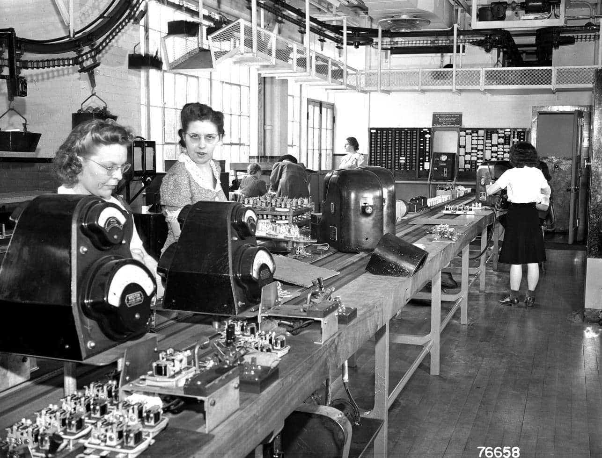
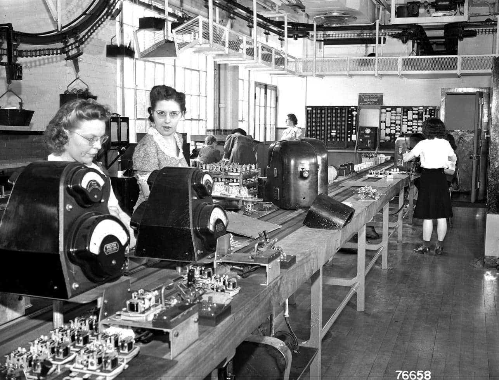
Use this to explain the WWII connection: what was produced, how operations shifted, and the broader historical context of Michigan’s wartime manufacturing.
From preservation to a warm, modern venue — with the character kept intact.
Tell the “before and after” story: what condition the building was in, major restoration milestones, and how the design choices kept the historic feel while improving flow for events.
 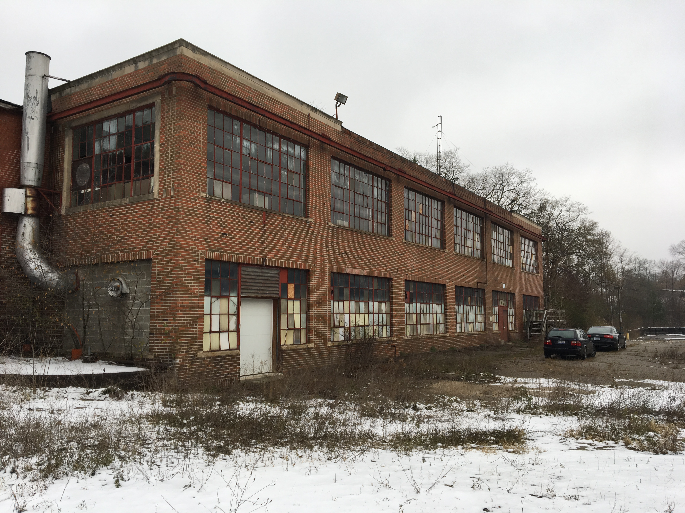
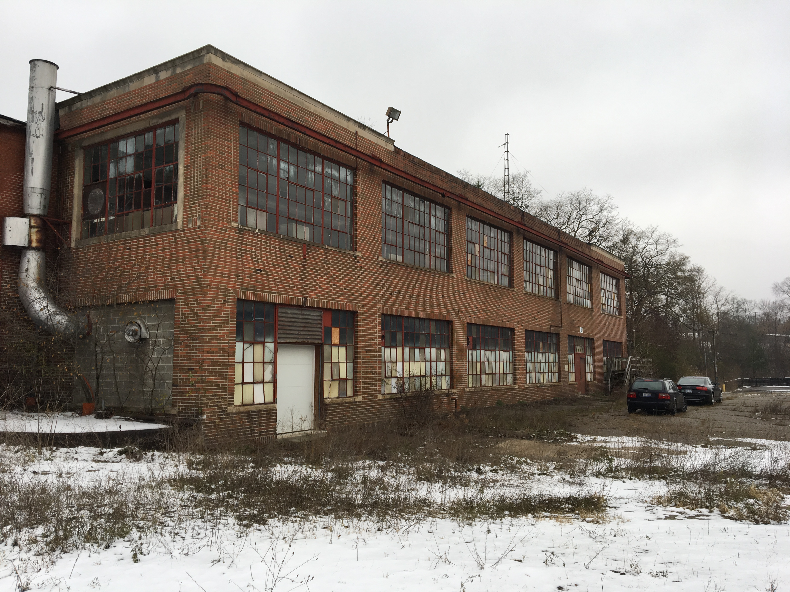
 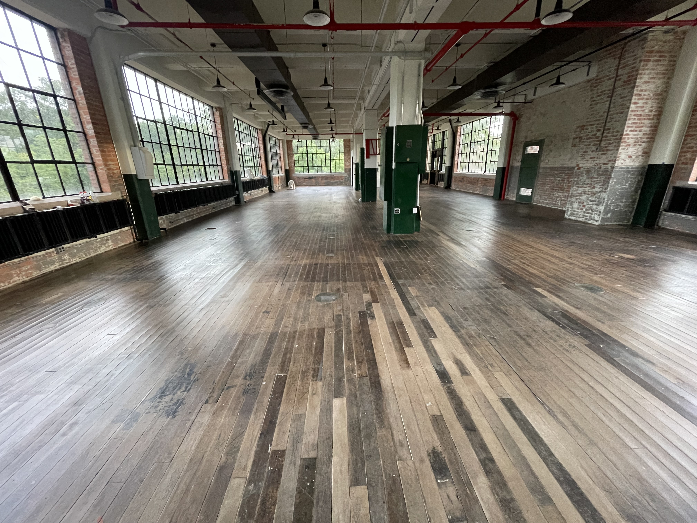
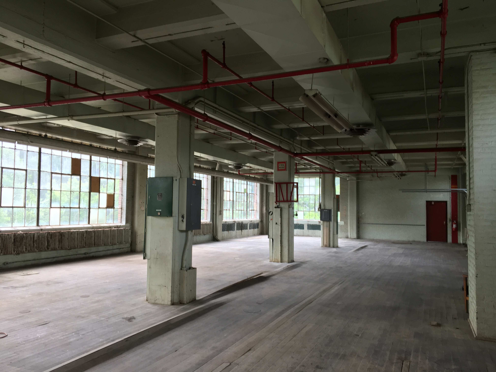
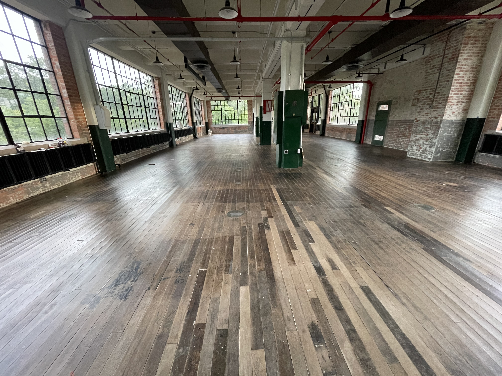
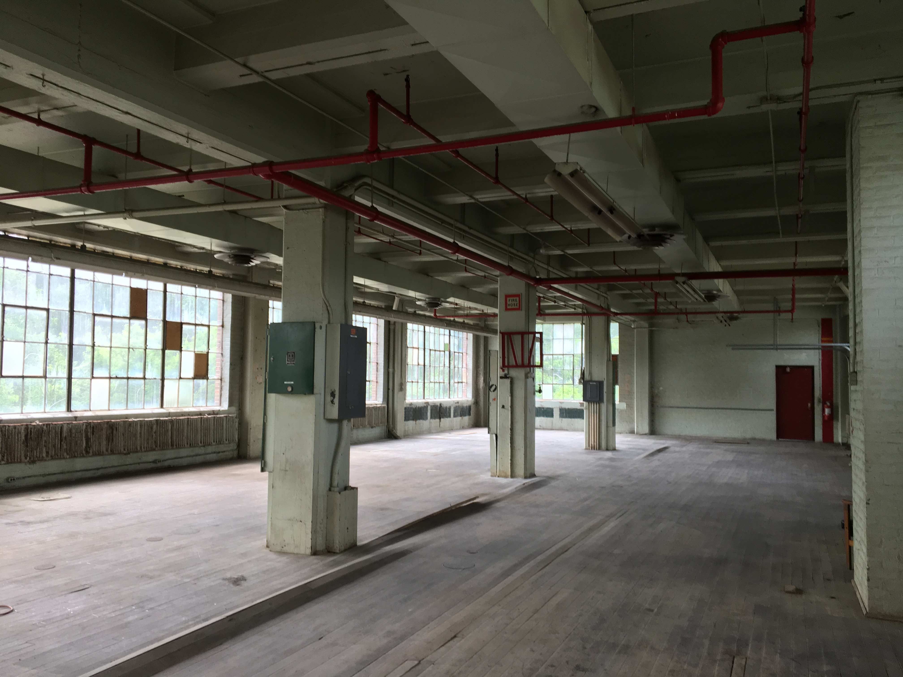

 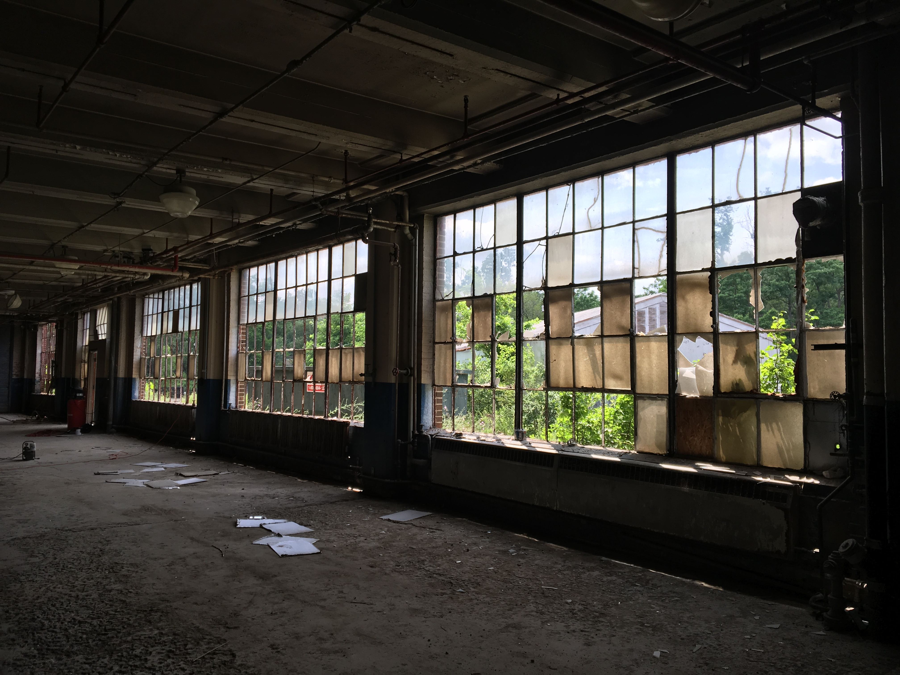
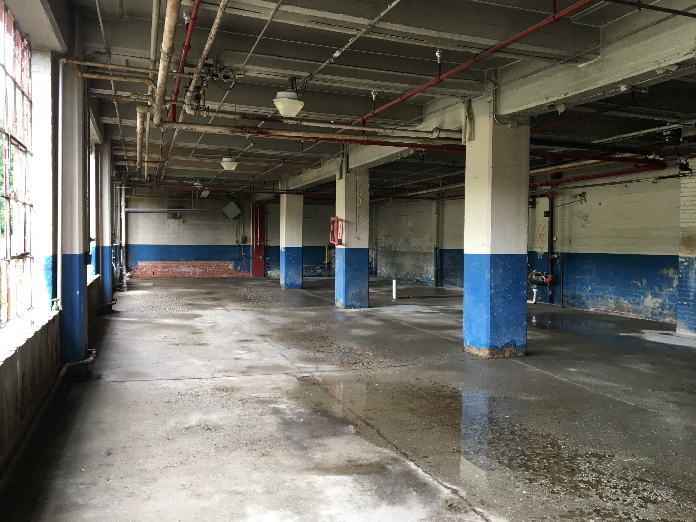
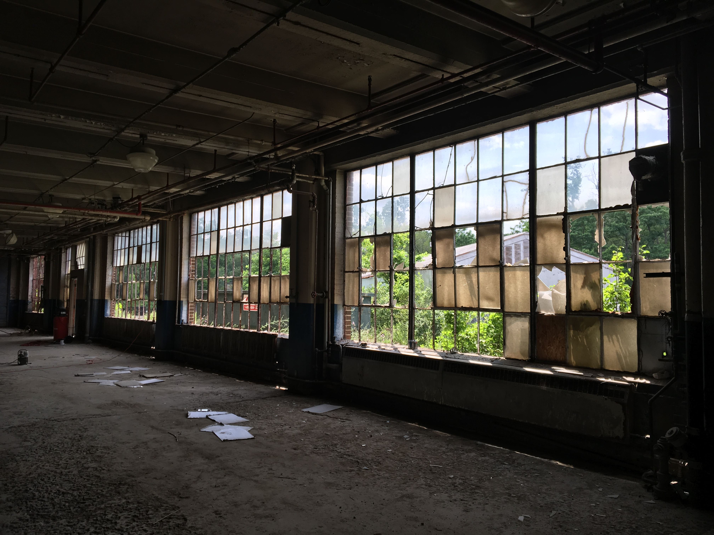
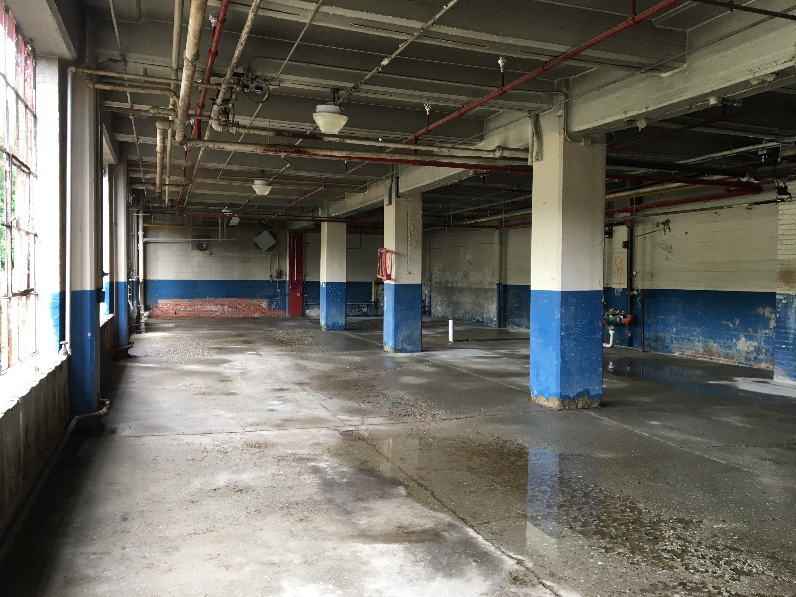